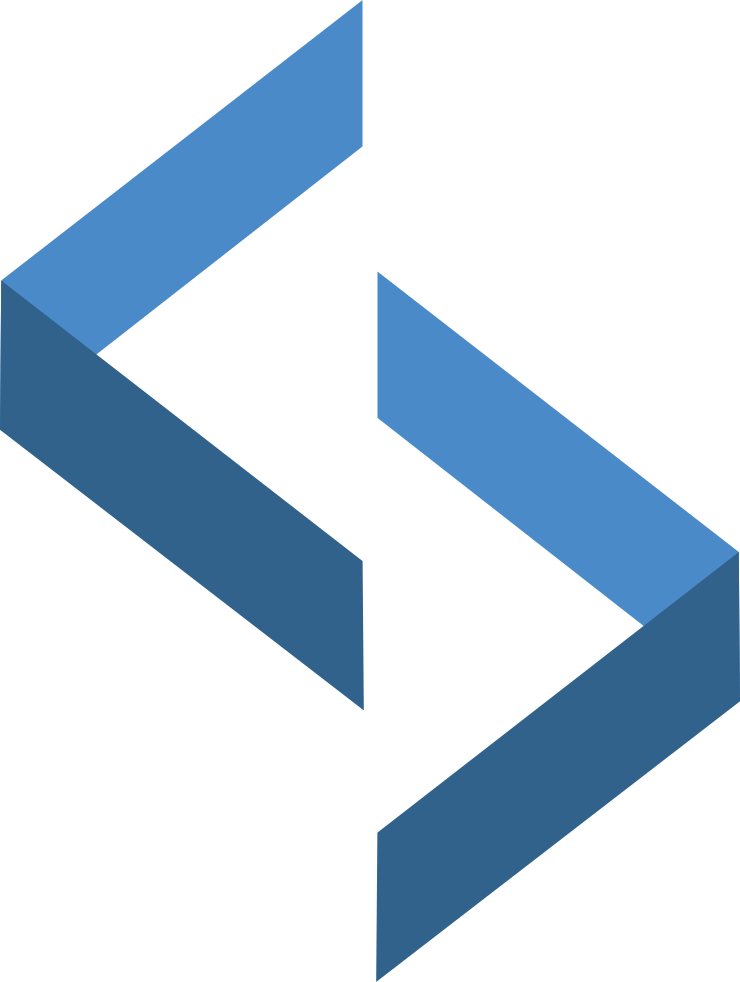
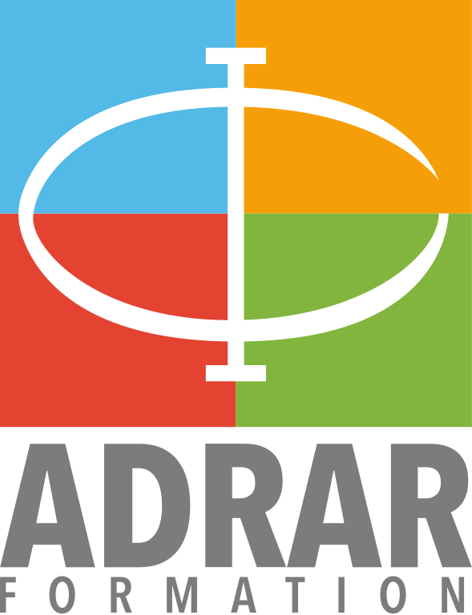

<div id="main" style="background-image: url(./images/bg2.png);">
    <div id="box">

        <ul id="sidemenu">
            <li id="profil" class="liactive">Profil</li>
            <li id="parcours">Education</li> 
            <li id="contact">Contact</li> 
        </ul>
        
        <div id="content">
            <div class="profil selected">
                <div class="homecontainer">
                    <div class="homecontent"><p>My name is Stefan and i'm a 26yo digital native working on improving his webdesign skills. I am a fast learner who enjoys aiding and listening to others. 
                    <br/><br/>I believe communication and a good environnement with open-minded people are key to success. I spend my free time practicing my skills on various web community projects. I also enjoy digital art and music, and lots of other things!
                    <br/><br/>This is my first real website project and it was made fully by hand, without frameworks, as i discovered programming! You can check out the code on my <a href="https://github.com/Drymy/Portfolio" target="_blank">GitHub : <i class="fab fa-github"></i></a></p>
                    
                    </div>
                </div>
            </div>
            
            
            
            <div class="parcours">
                <div class="homecontainer">
                    <div class="homecontent"><p>I took a WebDesign course at ADRAR France to obtain my Level 2 Diploma while most of my experience is self-taught.
                    <br/><br/>I currently do not have any real work experience as most of my past projects are volunteer work for web communities. If you are more interested in my
                    design skills check out the other tabs or take a loot at my <a href="https://www.behance.net/stefsimic" target="_blank">Behance page : <i class="fab fa-behance"></i></a>
                    <br/><br/>
                    Furthermore, i am fluent in French, English and Serbian.</p>
                    <a href="https://www.adrar-formation.com/" target="_blank"></a>
                    </div>
                </div>
            </div>


            <div class="contact">
                <div class="homecontainer">
                    <div class="homecontent"><p>For any business inquiries, contact me by mail :<br/>
                    <ul>
                        <li><i class="far fa-envelope"></i> simicstef34@gmail.com</li>
                    </ul>

                    <p>Check out my other platforms as well :</p> <br/>
                    <ul>
                        <li><a href="https://github.com/Drymy" target="_blank"><i class="fab fa-github"></i> GitHub </a></li><br/>
                        <li><a href="https://www.behance.net/stefsimic" target="_blank"><i class="fab fa-behance"></i> Behance </a></li><br/>
                        <li><a href="https://www.linkedin.com/in/stefan-simic-5204971b9/" target="_blank"><i class="fab fa-linkedin-in"></i> Linkedin </a></li><br/>
                        <li><a href="https://twitter.com/LastDreamy" target="_blank"><i class="fab fa-twitter"></i> Twitter</a></li><br/>
                        <li><i class="fab fa-discord"></i> Dreamy#0302</li><br/>
                    </ul></p>

                    </div>
                </div>
            </div>
        
        </div>
    </div>
</div>

